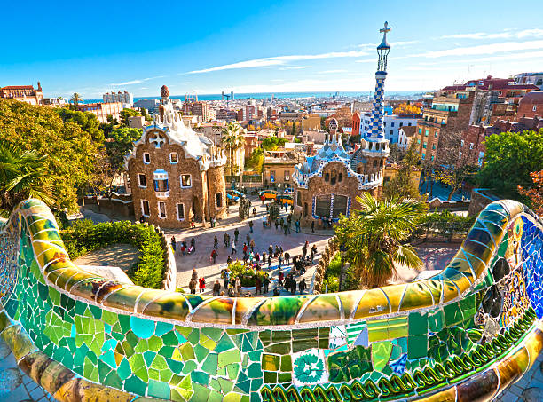
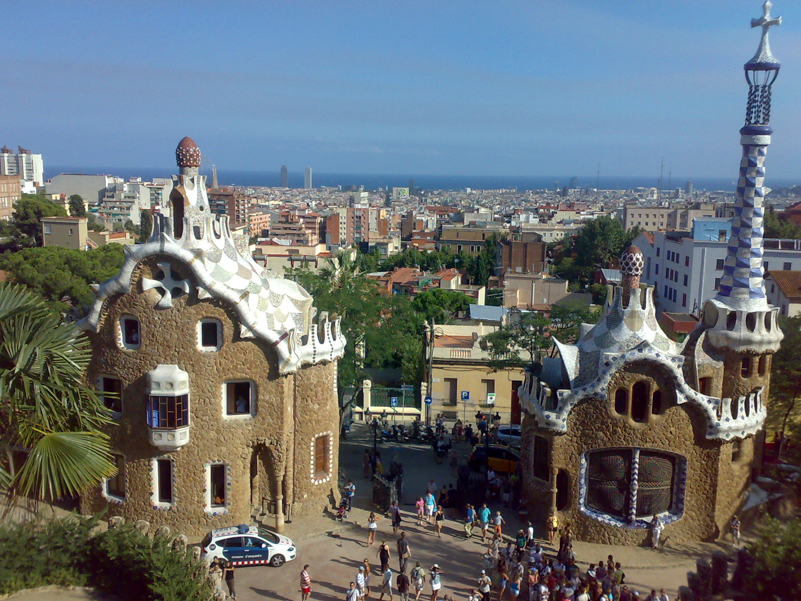
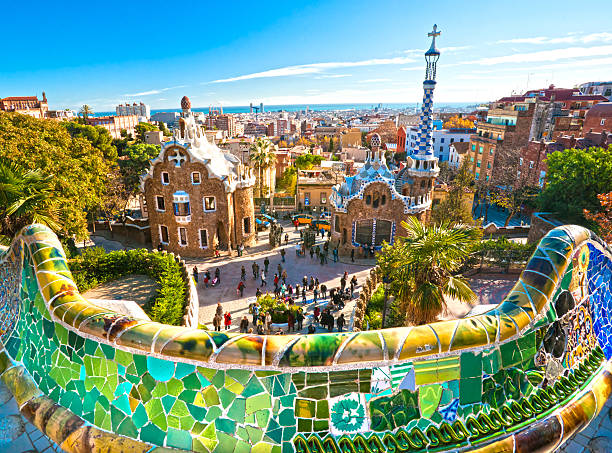
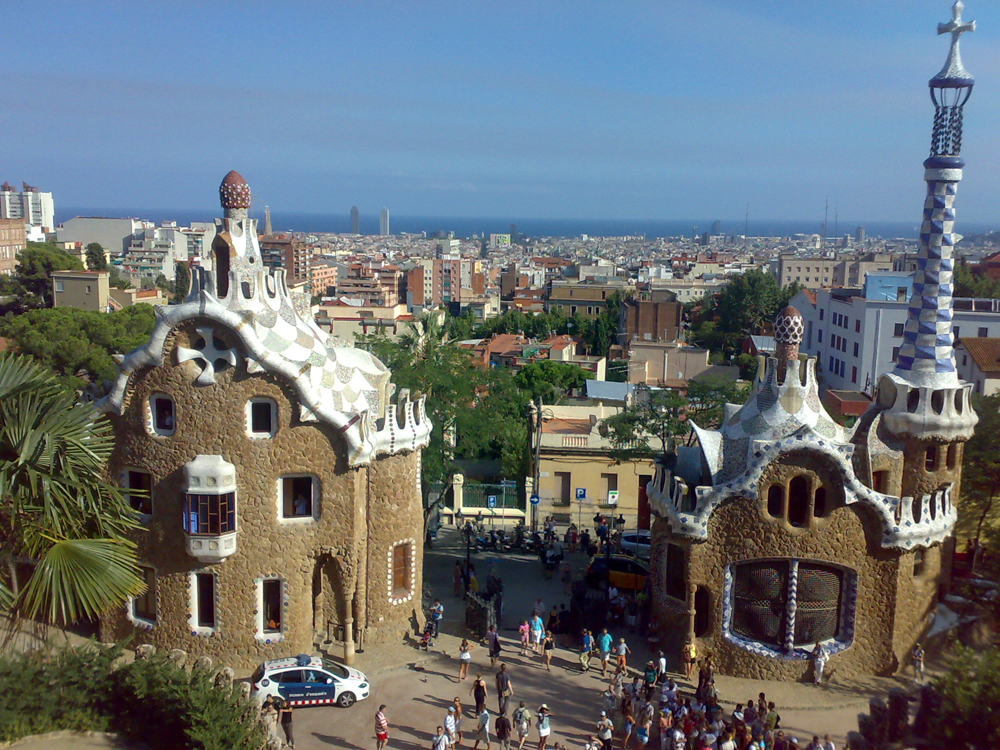
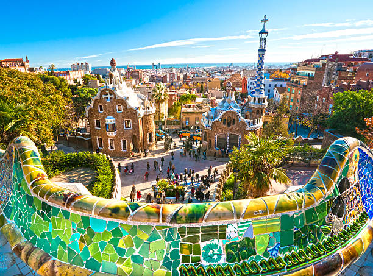
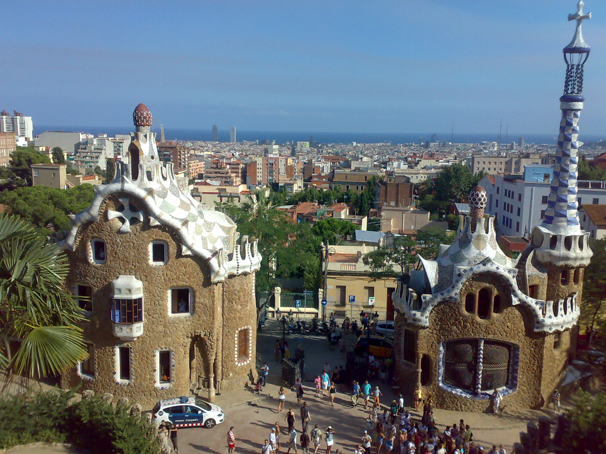
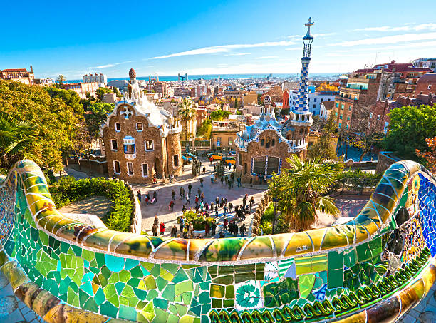
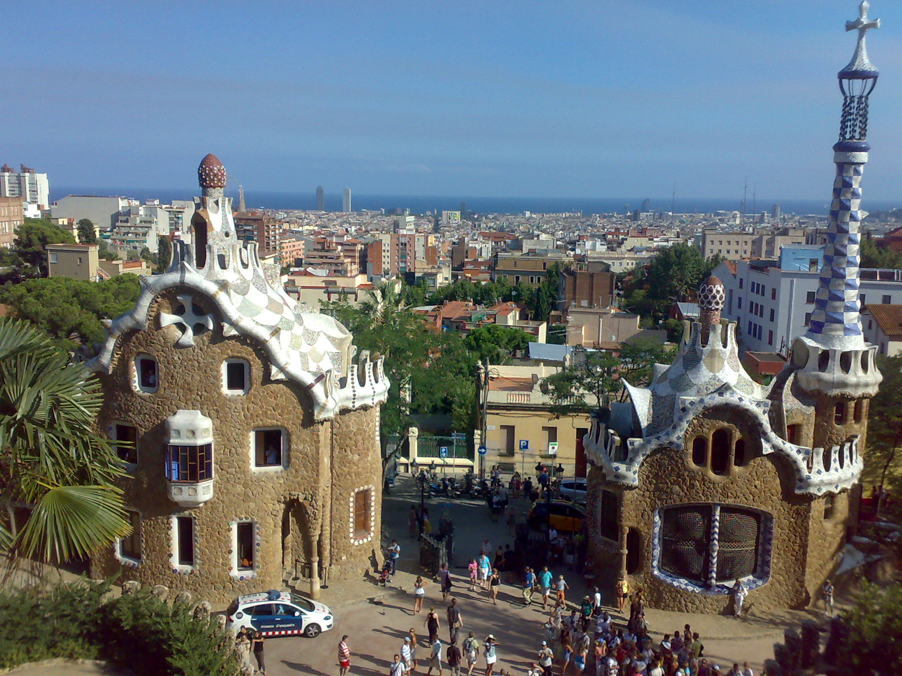

Another popular attraction in Barcelona would be Park Güell. It's perched on a hill that surrounds the city and you can see panoramic views from there. Designed by Antoni Gaudi, he was onced again inspired by nature. Gaudi didn't want to demolish the natural environment of the park so he tried to mimic the shape and structure of it. This is why you won't see any straight lines in the park, instead you'll see a whole lot of curves and slants.
In Park Güell you'll notice the same color scheme if you're coming from The Sagrada Familia. Antoni Gaudi loved his colors and added the same to the park. You'll see broken pieces of tiles arrayed from blue, green, red, etc. You'll also see some flowers and other designs that kind of mimic paint. This is where Gaudi pioneered the technique known as "trencadis." This means "chopped in Catalan" which is a style of mosaic work. This involves using small pieces of chopped ceramics cemented together.